Protected Case Study
This case study contains confidential work.
Please enter the password to continue.
Turning a hidden in-car feature into a meaningful user moment — through research, reframing, and interaction design that teaches without instructing.
Role
Senior UX / Product Designer
Team
Product Design, Research, PM, Engineering
Platform
In-car digital experience
Status
Delivered / In development
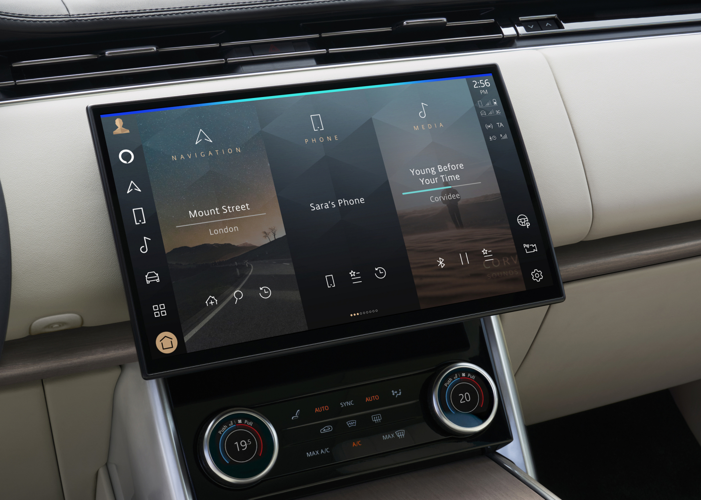
01 — Challenge
The Memory experience was designed to create personalised and meaningful moments for users by surfacing relevant content at the right time. It had genuine potential to create delight and personal connection in the in-car environment.
However, user research revealed an important gap: many users were not exploring beyond the initial surface. The experience relied on users discovering hidden interactions independently — creating a disconnect between what the product could do and what users understood was possible.
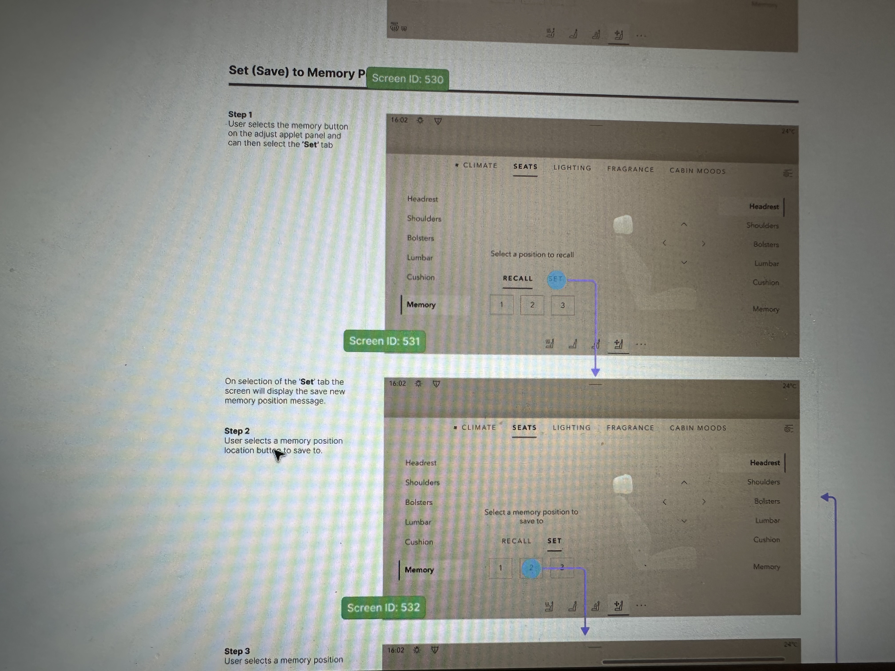
Users were not always aware that additional content and interactions existed beneath the surface they could see.
The experience relied on users understanding gestures without enough contextual guidance to feel confident exploring.
Solutions needed to improve understanding without increasing distraction — the in-car context demands a higher bar for cognitive simplicity.
Any intervention needed to feel natural, not instructional — adding UI to explain UI would undermine the premium experience.
02 — My Role
I led the UX design process from understanding the problem through exploration, validation, and refinement. Working across Product Design, Research, Product Management, and Engineering, my focus was on moving the team from a surface-level feature request to a deeper understanding of user behaviour.
My responsibilities included analysing research findings, identifying behavioural patterns, reframing the problem beyond the initial brief, exploring and testing multiple interaction concepts, and ensuring the final solution balanced usability, feasibility, and platform experience.
03 — Aligning on the Right Problem
The initial challenge appeared straightforward: users need to discover the swipe interaction. But through research and collaboration, we identified something deeper.
The problem was not that users could not perform the interaction. The problem was that users did not understand that more content existed, that the surface was interactive, or why exploring further would be valuable to them.
"How might we create an experience that naturally communicates its possibilities without requiring users to learn it?"— Problem reframe, shifting from gesture education to self-explanatory design
This shift fundamentally changed the design direction — from teaching a gesture to creating an experience that explains itself. The opportunity was not more onboarding. It was better design.
04 — Market & Competitive Research
Before defining the design direction, I conducted market and competitive research to understand how successful digital experiences create engagement through personalisation, discovery, and emotional connection. The goal was to explore how leading products help users rediscover meaningful content, how personalised experiences encourage repeat engagement, and what interaction patterns help users understand hidden value.
This research helped identify opportunities beyond improving discoverability — it helped define how Memory could become a more meaningful and valuable experience for users.
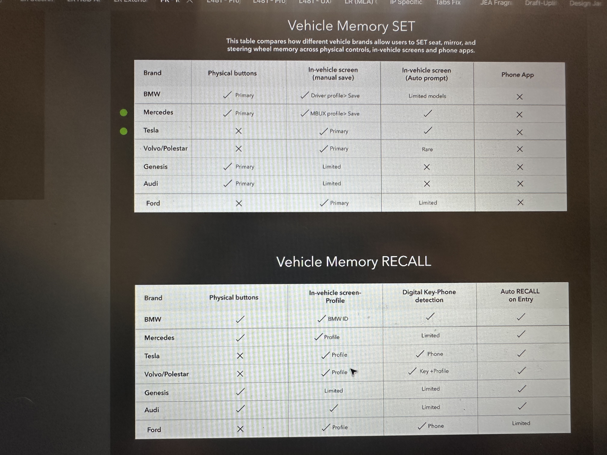
I analysed products across several categories: personal photo and memory platforms, personalised content experiences, entertainment and discovery platforms, and digital experiences focused on user identity and engagement. The research focused on understanding how successful products transform existing user data and behaviour into meaningful moments.
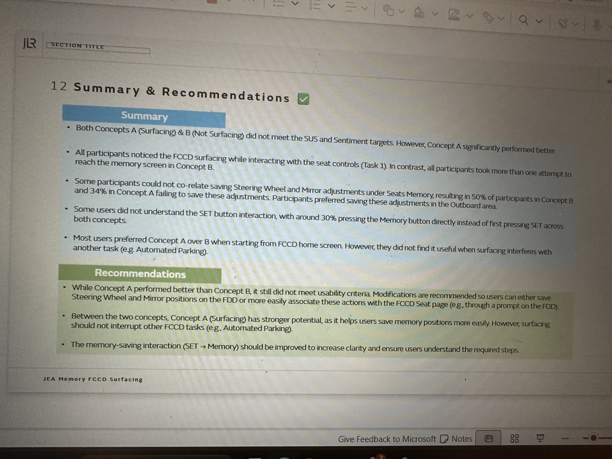
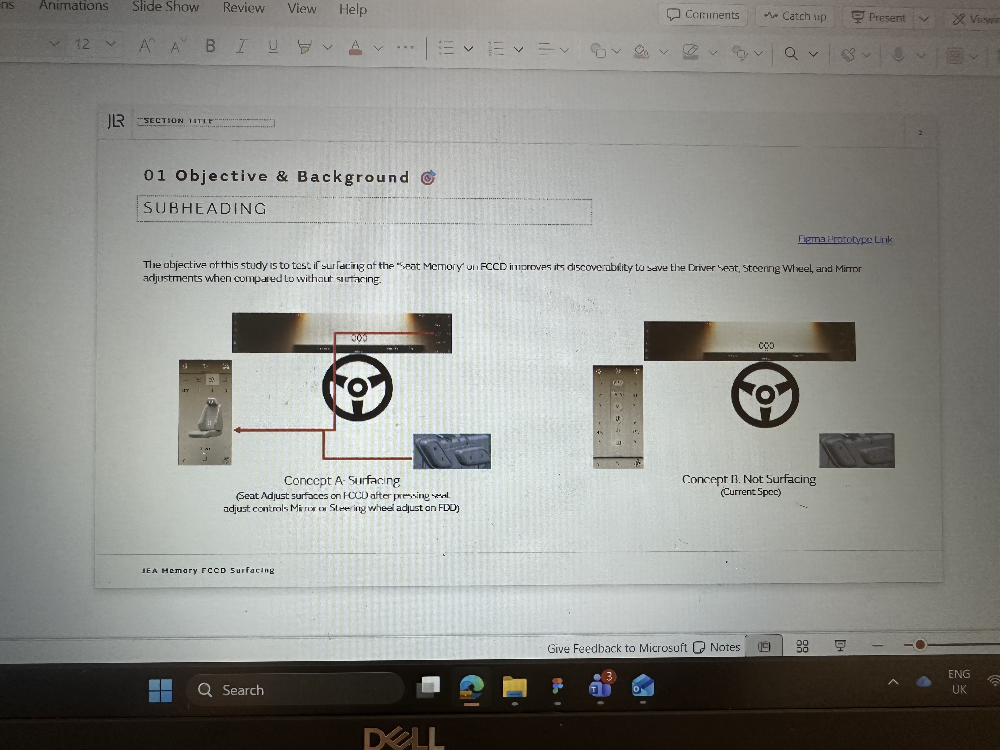
Leading products do not expect users to search for meaningful content. Photo platforms create personalised collections and resurfaced memories. Entertainment platforms use behavioural data to create personalised discovery journeys. The strongest experiences create a reason for users to care — they don't simply display content.
Successful memory-based experiences are valuable not because they provide more content, but because they help users reflect on meaningful moments, rediscover personal experiences, and feel understood by the product. This pointed to a clear opportunity: move from "showing users previous content" to "creating meaningful moments users want to revisit."
A consistent pattern across successful products: users are never forced to learn complex interactions. The experience itself communicates what is available, why it matters, and how users can engage. This reinforced the principle that Memory should not rely on instructions — the interface should guide users through intuitive interaction patterns.
Based on competitive research, market patterns, and user insights, three strategic opportunities emerged.
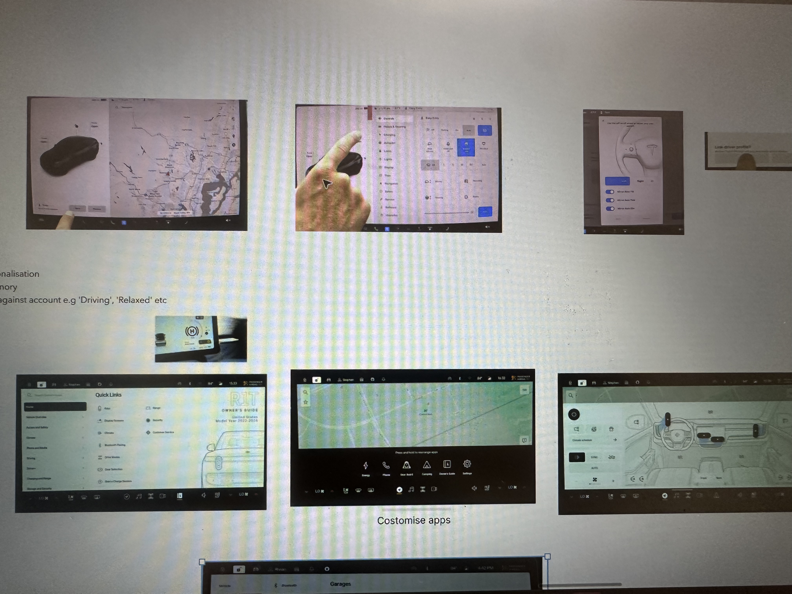
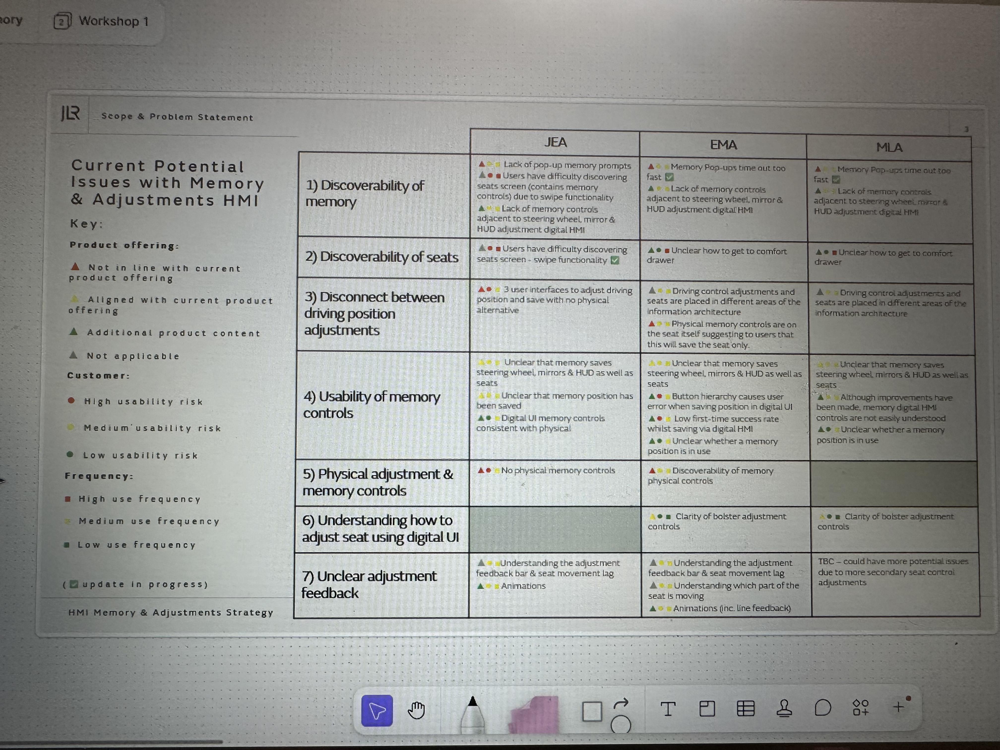
Help users understand that more value exists beyond the initial view — without requiring them to seek it out.
Design an experience that encourages users to connect with memories rather than simply consume content.
Create interaction patterns that can support future Memory experiences and evolving product capabilities.
Instead of "How can we make users discover the swipe gesture?" we asked "How can we create an experience where users naturally understand and engage with meaningful content?"
05 — Research & Key Insights
Through quantitative research and usability testing, we moved beyond what users could do and focused on what they understood. Three insights shaped the design direction.
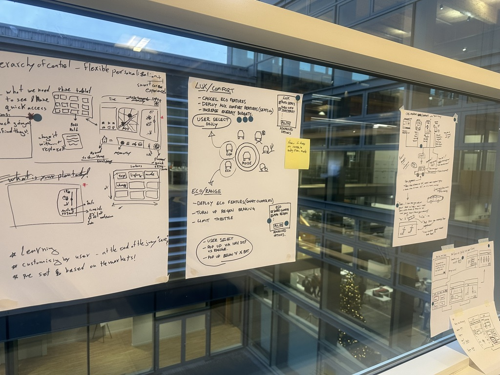
The initial surface gave users limited indication that additional content was available. Many interpreted the visible experience as the complete experience. Design opportunity: make hidden possibilities visible.
Unlike mobile, an in-car environment requires stronger confidence before exploration. Users are less likely to experiment with unfamiliar interactions. Design opportunity: create intuitive cues that encourage exploration without pressure.
Traditional onboarding could explain the interaction, but at the cost of friction. Design opportunity: design an experience that teaches through interaction rather than instructions.
06 — Discovery & Exploration
Rather than jumping to a solution, I explored multiple concepts to understand what best supported user behaviour. The exploration was framed around four questions: How might users naturally understand available gestures? How can the interface communicate that more content exists? How can we encourage exploration without creating uncertainty? How can this pattern support future experiences?
This divergent phase was critical. Several directions that looked viable on paper failed to hold up when tested against the in-car context — where cognitive load is genuinely constrained and the stakes of confusion are higher than on mobile.
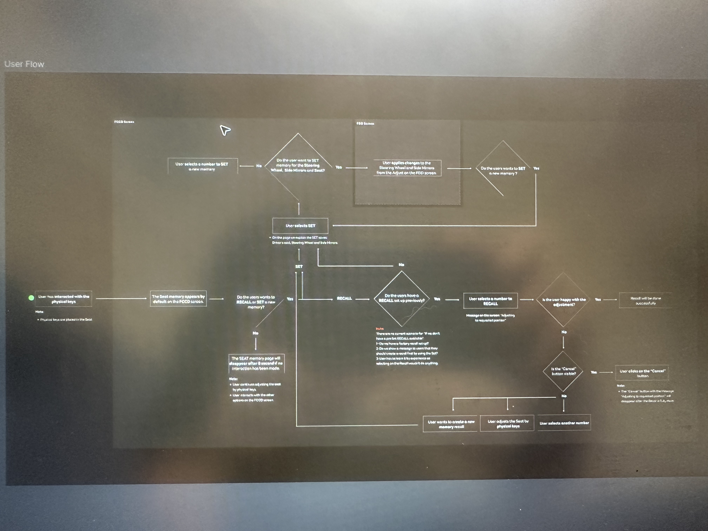
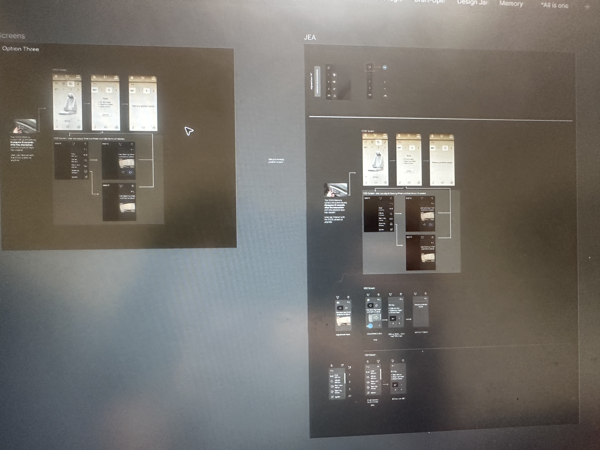
07 — Design Principles
Users should understand what they can do without needing instructions. The interface should communicate available actions naturally through visual affordance and spatial cues.
The experience should feel intuitive from the first interaction. Every element should help users understand the next step — not just complete the current one.
The solution needed to enhance discovery while preserving simplicity. No unnecessary UI. No friction added to remove friction. The improvement should feel invisible.
08 — The Solution
Based on research findings and iterative validation, the final direction improved the way users discovered and interacted with Memory. The solution focused on stronger interaction cues — helping users recognise that additional content was available — improved gesture understanding that made swipe interactions feel more intentional and predictable, and better content exploration through a smoother relationship between the surface and deeper Memory experiences.
The goal was not to add more interface elements. It was to improve communication between the product and the user.
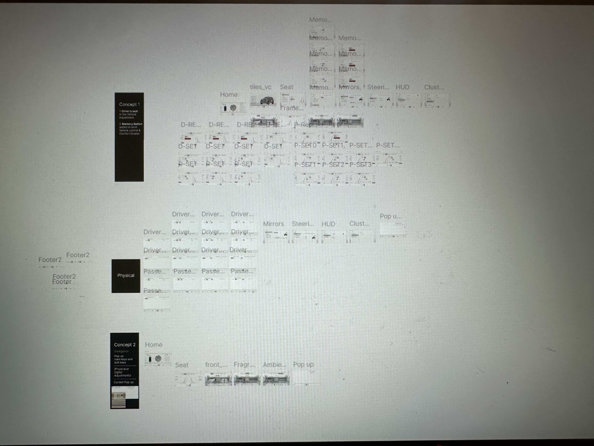
09 — Validation & Iteration
During testing, we evaluated more than whether users could complete the interaction. The questions that guided validation were: Did users notice the opportunity? Did they understand what would happen? Did they feel confident exploring? Did the interaction feel natural within the driving context?
Feedback informed refinements across visual cues, interaction behaviour, content hierarchy, and overall experience flow. Each iteration brought us closer to an experience that worked without explanation.
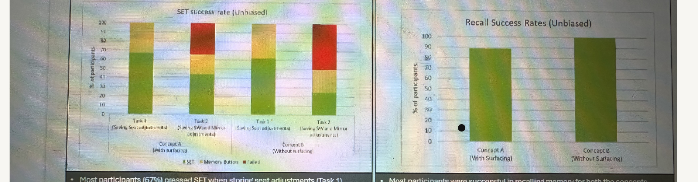
10 — Collaboration & Delivery
This project required close collaboration across Product Management — to align user needs with product goals; User Research — to translate behavioural insights into design decisions; and Engineering — to ensure concepts were technically achievable and scalable within the in-car platform constraints.
The cross-functional dynamic was particularly important here. Design decisions in an automotive context have long lead times and limited ability to iterate post-launch — which meant alignment before implementation was not a nicety, it was a requirement.
11 — Impact & Outcomes
The redesign transformed Memory from an experience users could overlook into one they could naturally discover and engage with. By improving interaction clarity and reducing uncertainty, we created a stronger connection between the product's capabilities and the user's expectations.
Users gained a clearer understanding that additional Memory content and interactions were available. Before: users often interpreted the initial surface as the complete experience. After: stronger visual and interaction cues encouraged natural exploration.
The experience reduced hesitation by creating a clearer mental model of what users could do, where additional content existed, and what would happen after interaction. Users were able to explore more naturally without additional instructions.
Instead of relying on users to learn hidden interactions, the design communicated possibilities through the experience itself — resulting in a simpler, more intuitive interaction model.
By improving discovery, the redesign unlocked more opportunities for users to interact with Memory content and experience the value of the feature.
The updated interaction patterns created a scalable framework that can support future Memory features and personalised experiences.
The project helped ensure that investment in the Memory capability translated into a clearer and more meaningful user experience.
Measured through discovery rate, engagement with additional content, interaction completion rates, user confidence during testing, and qualitative usability findings. Specific metrics are confidential.
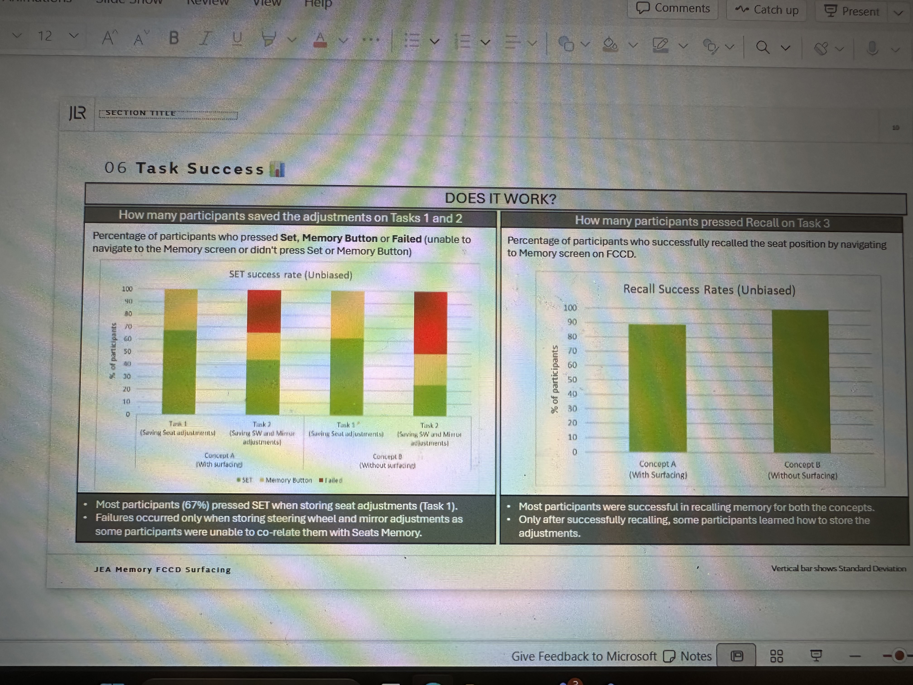
12 — Final Reflection
This project reinforced that great product experiences are not created by adding more features — they are created by helping users recognise and access the value that already exists.
The biggest challenge was not designing a new interaction. It was closing the gap between what the product could do and what users understood was possible. By combining competitive research, behavioural insights, iterative design, and validation, we created a Memory experience that was more discoverable, intuitive, and meaningful.
"Great product experiences are not created by adding more features — they are created by helping users recognise and access the value that already exists."— Key learning from the JLR Memory project
Next project
Land Rover & Jaguar — UX Architecture →This project is one example of moving from a feature request to a genuine user behaviour problem. If you're facing something similar, I'd love to talk.
Start a conversation →